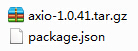

3.3. 包管理¶
3.3.1. 必要概念¶
3.3.1.1. 制品类型 Artifact Type¶
制品类型是对软件输出结果的顶层划分，比如文档、SDK、构造器等等，当前基本制品类型有：
| 制品类型 | 说明 |
|---|---|
| package | 通用包，包括应用程序、工具链等任意文件类型 |
| doc | 文档，比如 pdf, chm 等各种格式的文档 |
| page | 页面，HTML页面 |
| axbuilder | 构建器，各种类型制品的构建器 |
3.3.1.2. 包 Package¶
包是对软件输出结果(即制品)的封装，通常为一个压缩文件，以 axio 工具为例，可使用如下命令下载 axio 包到当前文件夹 ：
axio download axio
上述命令下载了一个名为 axio-1.0.41.zip 的压缩包， 包文件的命名格式通常是 制品名-版本号.zip 。
- 制品名 Name:
- 制品的命名只允许使用
[a-z , _ , -]，即小写字母、短横线和短下划线，合法的命名例如venv-nuitks、tool-mingw64、axio - 在同一类制品中，包的命名必须是唯一的，包一旦正式发布后，包名是不能更改的
- 制品的命名只允许使用
- 制品版本号 Version:
- 制品版本号遵守 语义化版本2.0.0
- 制品描述文件 Manifest:
制品被打包时，对应的描述文件同时被打包，用于后续的包管理，制品描述文件的命名格式通常是 制品类型.json 。例如，包
axio-1.0.41.zip解压后可到如下文件：package.json 为包的描述文件，其内容为 json 格式，由构建器在构建axio时自动生成，axio 的描述文件如下：
{ "name": "axio", "version": "1.0.41", "description": "AXIO CLI application", "builder": "app_axio@1.0.41", "packer": "package@1.1.0", "engine": "axio@1.0.41", "group": "develop", "status": "stable" }
3.3.1.3. 包依赖的描述¶
包依赖的完整描述格式为 制品类型.制品名@版本条件 ，例如 axio 1.0.40 的完整描述为
package.axio@1.0.40。对于通用包，可以省略 制品类型. 部分，比如，
axio@1.0.40等价于package.axio@1.0.40。版本条件：
- 省略 @版本条件 表示最新版本，比如
axio表示最新版本的 axio - 版本条件 为合法版本号时，表示指定的唯一版本，比如
axio@1.0.40表示版本号为1.0.40的 axio ~前缀表示修订号兼容，比如axio@~1.0.40表示版本号>= 1.0.40且< 1.1.0的 axio^前缀表示次版本号兼容，比如axio@^1.0.40表示版本号>= 1.0.40且< 2.0.0的axio
- 省略 @版本条件 表示最新版本，比如